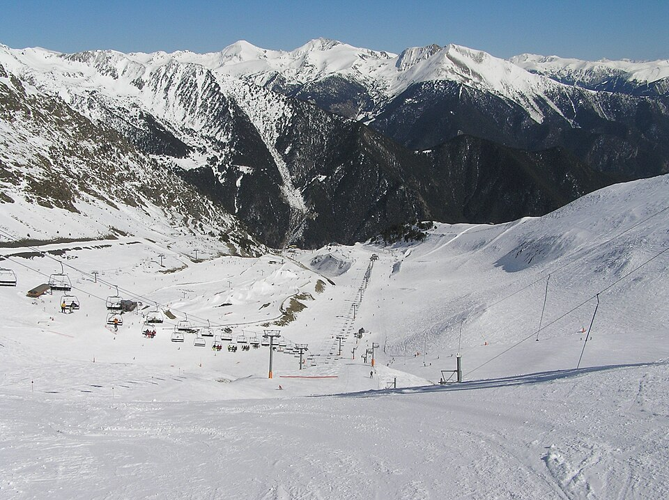

Pal Arinsal
La Massana · Andorra
- Pistas
- 39 km
- 63 trazados
- Cota máxima
- 2534 m
- mínima 1470 m
- Desnivel
- 1064 m
- esquiable
- Remontes
- 30
- 2 telecab. · 12 telesillas
Dos sectores de carácter distinto en La Massana: Pal, entre bosque, y Arinsal, más alpino, unidos por teleférico.
Foto: Terence wiki · CC BY-SA 3.0 · Wikimedia Commons
Hoy
Pal Arinsal ahora mismo
Estado de pistas y remontes según el último parte publicado, y las webcams de la estación.
Webcams
Estado y webcams de Infonieve.es, a partir de los partes y cámaras de cada estación. Antes de salir, confírmalo en la web oficial o en su parte de nieve.
Próximos 7 días
Nieve y tiempo previstos
Previsión para la cota alta (2534 m) y la base (1470 m).
Previsión de modelos meteorológicos de Open-Meteo (CC BY 4.0). Es previsión, no observación: lo que hay abierto hoy está en el estado de pistas.
Plano
Plano de pistas
Pasa el cursor o toca una pista o un remonte para ver su nombre, longitud y desnivel.
Trazados: © colaboradores de OpenStreetMap (ODbL), datos del 10 de agosto de 2026. No es el plano oficial de la estación ni refleja aperturas.
Pistas
63 pistas, 39 km
La más larga con nombre es Les Fonts (2,4 km, azul).
VerdeMuy fácil
7 pistas · 3,1 km
Ver nombres
- Transversal 1,2 km
- El Cortalet 0,4 km
- El Planell 0,2 km
- Beginner Area 0,1 km
AzulFácil
30 pistas · 20,3 km
Ver nombres
- Les Fonts 2,4 km
- Coll de la Botella 2 km
- Les Marrades 1,8 km
- Cami Inferior 1,5 km
- La Serra 1,3 km
- El Besurt II 1,3 km
- El Gall 1,2 km
- Cami Superior 1 km
- La Solana 0,9 km
- Margarida 0,9 km
- Port Vell 0,8 km
- Cami Superior 0,6 km
- Cami del Mig 0,6 km
- Tossa 0,5 km
- El Beç 0,5 km
- Snow Park 0,5 km
- Els Avets 0,5 km
- Salador 0,4 km
- Niu 0,3 km
- Niu 0,2 km
- Port Vell 0,2 km
- Comallemple 0,1 km
- Cami Inferior 0,1 km
- La Serra 0,1 km
RojaIntermedia
20 pistas · 12,1 km
Ver nombres
- Coms 1,1 km
- Font Roja 1,1 km
- La Tossa 1 km
- La Serra 0,9 km
- Les Roques 0,8 km
- Fontanals 0,8 km
- La Pala 0,7 km
- Estadi Joan Carchat 0,7 km
- Corpalanca 0,7 km
- Tub Estadi 0,6 km
- Estadi 0,5 km
- Bony 0,5 km
- Estadi Eslalom 0,5 km
- El Besurt 0,5 km
- La Cot 0,3 km
NegraDifícil
4 pistas · 3 km
Ver nombres
- La Comellada 1,4 km
- La Capa 0,7 km
- Tub del Coll 0,4 km
- Bony Vaques 0,4 km
Sin clasificarSin dificultad en los datos
2 pistas · 0,1 km
Ver nombres
- Route to Snow Park 0,1 km
Remontes
30 remontes
El de mayor desnivel: El Cubil, 456 m.
| Remonte | Tipo | Longitud | Desnivel | Llegada |
|---|---|---|---|---|
| El Cubil | Telesilla | 1300 m | 456 m | 2342 m |
| Els Orriols | Telecabina | 1005 m | 443 m | 1913 m |
| Arinsal-Pal | Teleférico | 2375 m | 423 m | 2486 m |
| Les Fonts | Telesilla | 1658 m | 393 m | 2311 m |
| Port Negre | Telesilla | 1558 m | 392 m | 2486 m |
| Arinsal | Telesilla | 841 m | 368 m | 1917 m |
| Setúria | Telesilla | 979 m | 367 m | 2260 m |
| El Cubil | Telesquí | 1083 m | 341 m | 2341 m |
| La Serra II | Telesilla | 1088 m | 289 m | 2075 m |
| La Tossa | Telesilla | 1027 m | 264 m | 2183 m |
| Coll de la Botella | Telesilla | 1056 m | 247 m | 2311 m |
| La Serra | Telesquí | 478 m | 186 m | 2074 m |
| La Serra I | Telesilla | 1407 m | 184 m | 2075 m |
| Els Coms | Telesquí | 488 m | 146 m | 2332 m |
| La Carbonera | Telesilla | 425 m | 134 m | 1925 m |
| El Cortal | Telesilla | 423 m | 97 m | 2021 m |
| La Capa | Telesquí | 400 m | 83 m | 2534 m |
| Els Planels | Telesquí | 461 m | 74 m | 2300 m |
| La Caubella | Telesilla | 194 m | 28 m | 1922 m |
| La Tossa I | Telesquí | 366 m | 20 m | 2315 m |
| La Tossa II | Telesquí | 363 m | 20 m | 2314 m |
| El Planell | Cinta | 141 m | 19 m | 1918 m |
| L'Escola I | Cinta | 80 m | 13 m | 1941 m |
| L'Escola II | Cinta | 78 m | 13 m | 1941 m |
| Pedres Blanques II | Cinta | 71 m | 9 m | 1894 m |
| El Planell I | Cinta | 52 m | 7 m | 1906 m |
| Pedres Blanques I | Cinta | 69 m | 7 m | 1894 m |
| — | Cinta | 60 m | 6 m | 1897 m |
| Pla de la Cot I | Cinta | 103 m | 4 m | 2075 m |
| Pla de la Cot II | Cinta | 52 m | 1 m | 2076 m |
Longitud en planta y desnivel sobre el modelo de relieve. No incluye horarios ni estado de apertura.
Guía práctica
Antes de ir a Pal Arinsal
Cómo llegar
La Massana, Andorra (Andorra). Coordenadas del dominio: 42,5513, 1,4635.
Ver en OpenStreetMap · Cómo llegar en coche
En invierno comprueba el estado de la carretera y si hacen falta cadenas.
El terreno
- Pic del Port Vell, 2653 m
- Alt de la Capa, 2573 m
- Pic Negre, 2570 m
- Pic dels Aspres, 2562 m
- Núcleos: Pal, Xixerella, Erts, Arinsal
Enlaces oficiales
Forfaits, horarios y aperturas cambian durante la temporada: los publica la estación.
Para parar en pistas
- Restaurant Bambú
- Borda Raubert
- Restaurant Panoramix
- Surf
- Bar/Restaurant 360
- Factory
- Restaurant/Bar Mollies
- Restaurant/Bar Ciscos
Restaurantes y cafeterías con nombre en OpenStreetMap. Sin horarios.
Pal Arinsal sin cobertura
La app para Android guarda los mapas en el móvil y te ayuda a encontrarte con tu grupo.